I am an Associate Researcher at Shanghai Jiao Tong University (SJTU), supervised by Professor Guangtao Xue. My research is conducted within the Shanghai Key Laboratory of Web3 Trusted Data Circulation and Governance, and I am pleased to contribute as a member of the CCF Internet of Things Special Committee.
My research interests lie at the intersection of the Internet of Things (IoT), Intelligent Sensing, and Large Language Models (LLMs). I am driven by the goal of bridging the gap between physical sensing and intelligent cognitive understanding to create more intuitive and secure systems.
I feel fortunate to work alongside a team of exceptionally talented colleagues and students whose insights constantly inspire my work. Through these collaborative efforts, I have had the opportunity to share our findings in venues such as USENIX Security, NSDI, MobiCom, and IEEE INFOCOM. I was also deeply honored to receive the 2025 Shanghai Computer Society Science and Technology Award (First Prize).
- 2026/05 Our paper LLM4-IC8K has been accepted by ICML 2026. Congratulations to Yida, Chenzhe, and Yixin! CCF-A
- 2026/04 Honored to receive the First Prize of the 2025 Shanghai Computer Society Science and Technology Award. Award
- 2026/04 Weiyi's paper submitted to UBICOMP venue received a 'Major Revision' decision. CCF-A
- 2026/01 Paper "Empowering Aerospace and Marine Remote Sensing: Crowdsourced Salinity Sensing Based on Acoustic CSI and AI" Published on Air & Space Defence Journal
- 2026/01 Successfully completed the Huawei Collaboration Project on AP electromagnetic sensing security. Industry
- 2026/01 MagPrint++ published in IEEE Transactions on Mobile Computing. CCF-A
- 2025/10 Paper NlcTCN accepted by IEEE BIBM. Congratulations to Zechen and Yiheng! CCF-B
- 2025/09 Paper MagPrint++ accepted by IEEE TMC. CCF-A
- 2025/09 Paper SingSPirit accepted by SenSys 2026. CCF-B
- 2025/09 Deployed the industry's first Anti-Surveillance Detection System with Huawei Data Communications (99% accuracy). Industry
- 2025/08 Secured NSFC Youth Project (C class) funding! Grant
- 2024/12 Paper MagSpy accepted by IEEE TMC. Congratulations to Yongjian! CCF-A
# denotes equal contribution. Bold = Lanqing Yang.
- First Prize 2025 Shanghai Computer Society Science and Technology Award — Project on key technologies for intelligent integration of biopharmaceutical equipment. (Ranked 8th)
- Certificate of Participation, Outstanding Youth Paper Award (2020/07)
- Shanghai Outstanding Graduate
- Second Prize, National College Green Computing Competition (2018/11)
- Third Prize, IEEE VNC 2018 App Contest (2018/11)
- PI: NSFC Youth Project (C class) — "Key technologies for electromagnetic sensing of mobile IoT terminals under perception-constrained scenarios." (Jan 2026 – Dec 2028). Budget: ¥300,000
- PI: Shanghai 2024 "Science and Technology Innovation Action Plan" Natural Science Fund General Project — "Key technologies for mobile electromagnetic sensing." (Oct 2024 – Sep 2027). Budget: ¥200,000
- PI: Huawei Collaboration Project — "Collaboration Project on Constructing AP Electromagnetic Sensing Security Capabilities." (Nov 2024 – Nov 2025). Budget: ¥740,000
- Key Member (3rd PI): National Key R&D Program — "Research on novel precision diagnosis and treatment strategies for cervical cancer based on multi-source heterogeneous clinical data." (Jan 2026 – Dec 2027). Budget: ¥3,000,000
- Participant: NSFC General Program — "Analysis of lesion images based on multimodal feature embedding and fusion." (2026–2029). Budget: ¥490,000
- Participant: NSFC General Program — "Mobile computing and intelligent sensing based on electromagnetic radiation side-channel signals." (2021–2024). Budget: ¥570,000
- Participant: NSFC Key Program — "Research on key technologies for resource optimization in edge intelligence architectures." (2020–2024). Budget: ¥2,980,000
- A visual continual learning inference method and system based on multi-model fusion — CN202610013675.2. [Under substantive examination]
- A method, device, equipment, and medium for appliance category and state detection — CN202511045929.0. [Under substantive examination]
- A method for material identification of objects based on tapping sound simulation and deep learning — CN202510160438.4. Authorized
- A multi-region data migration method and storage system based on correlation perception — CN202411319922.9. [Accepted]
- An enterprise-level carbon emission prediction method and its system — CN202410576384.5. [Under substantive examination]
- A security optimization method for air gap systems — CN202310008703.8. Authorized
- A server fault diagnosis technology and system based on ultrasonic signals — CN202111661426.8. [Under substantive examination]
- A monitoring method and system for mobile devices based on magnetic induction signals — CN201910193710.3. Authorized
Most sensing systems work in the lab but fail in the "wild." My goal is to sense the unreachable and the invisible. Whether it is an ultra-weak signal under the ocean, a hidden device in a secure room, or a fragmented data pattern in a power grid—I focus on the physics of the bottom layer to build systems that are robust, deployable, and industrially meaningful.
Deployed production-grade detection for covert eavesdropping and hidden cameras (99% accuracy).
Implementing small-sample image recognition for critical electrical infrastructure monitoring.
Developing ultra-weak signal processing for ocean target detection and soil analysis.
Click on any project to explore the system architecture and watch the live demonstration.
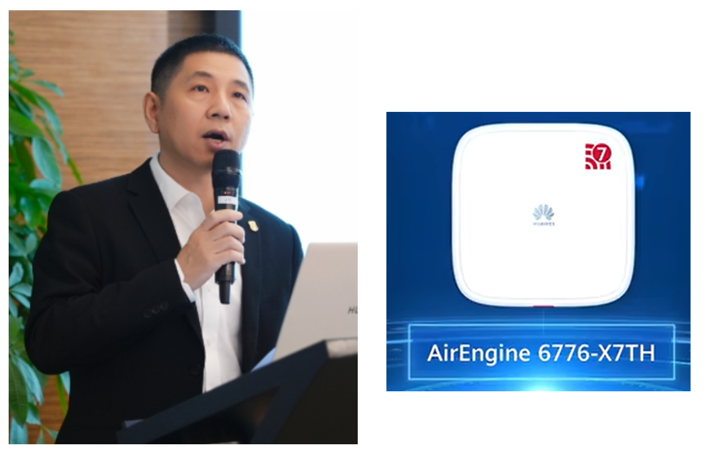
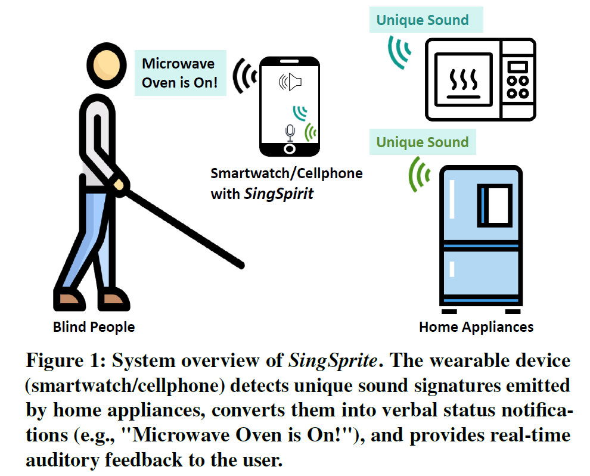
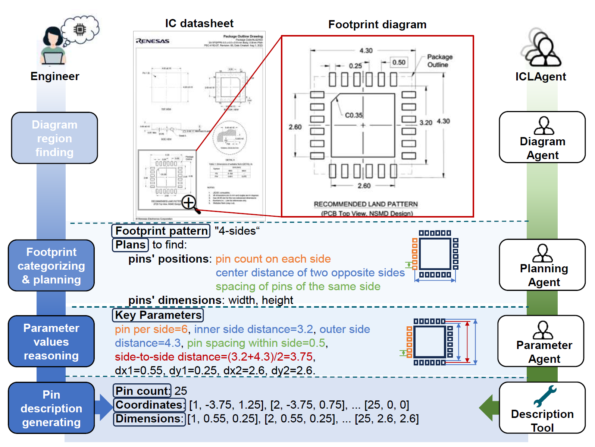
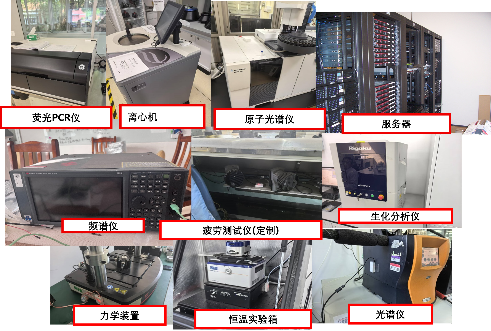
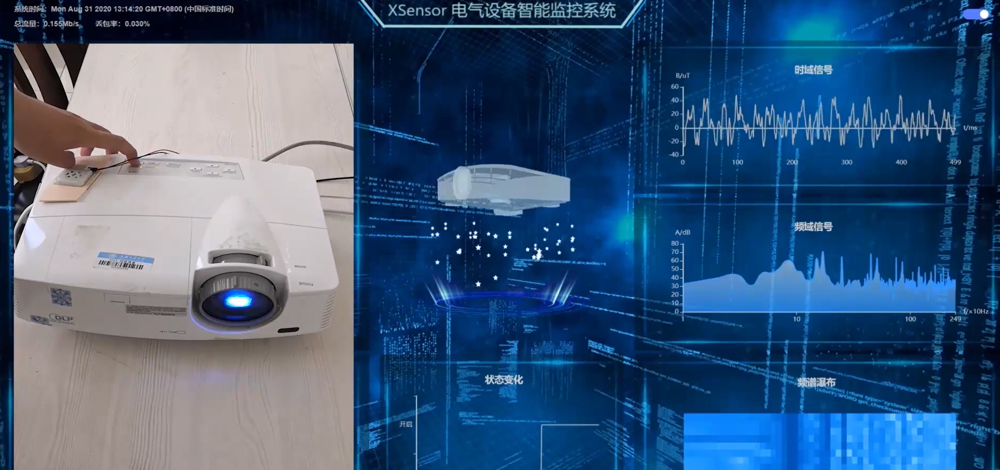
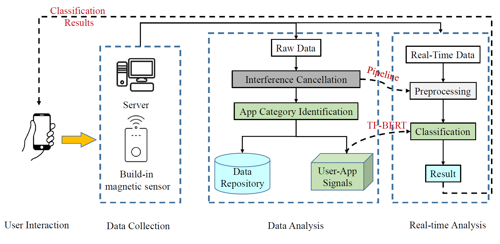
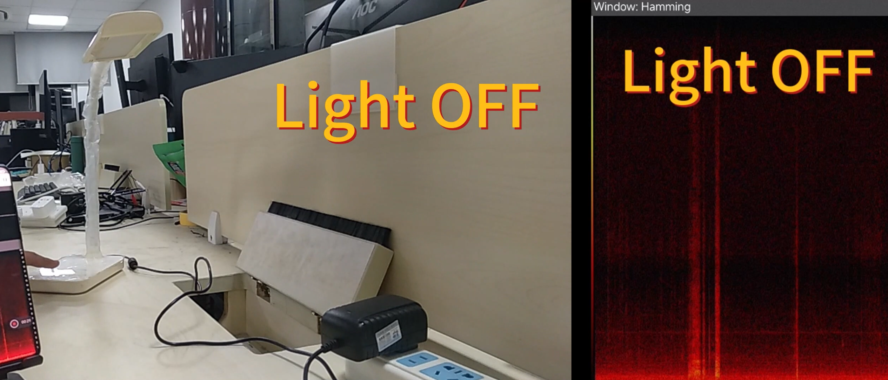
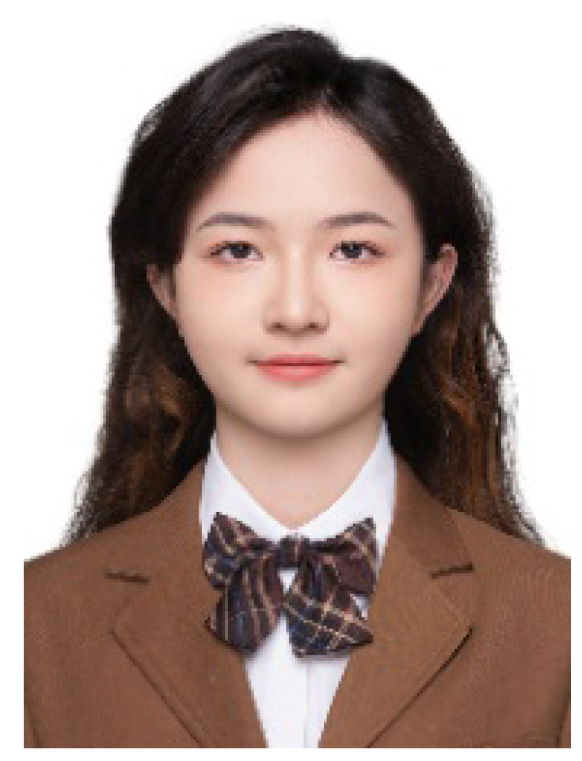
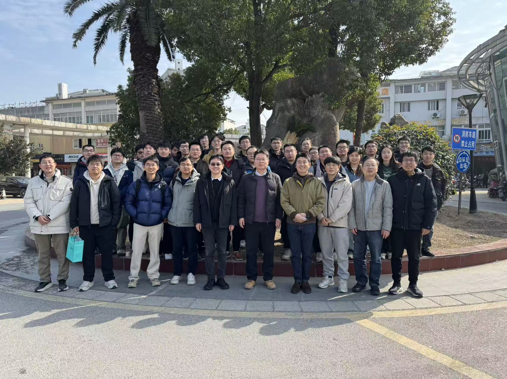
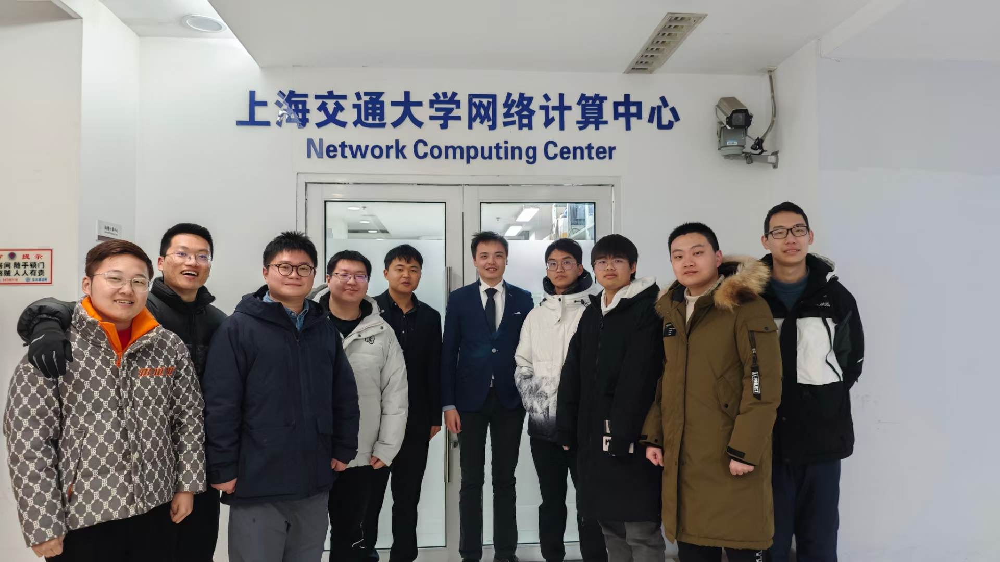
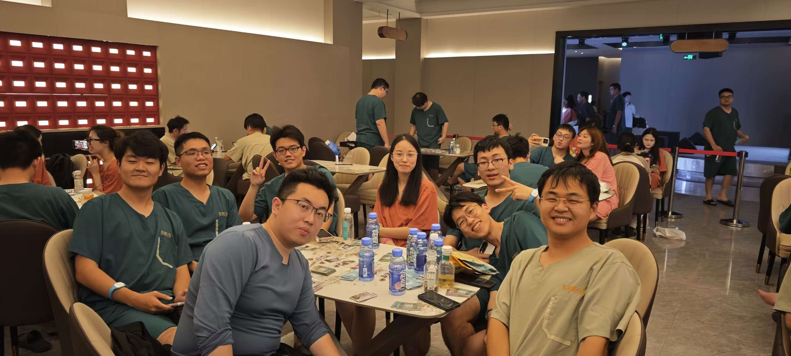
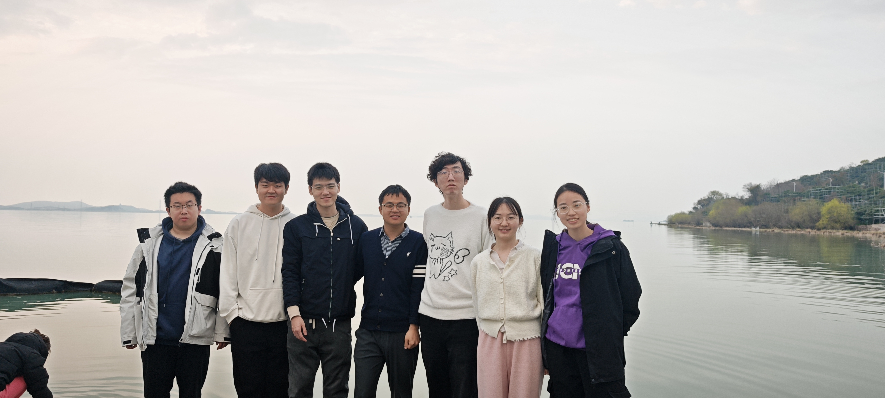
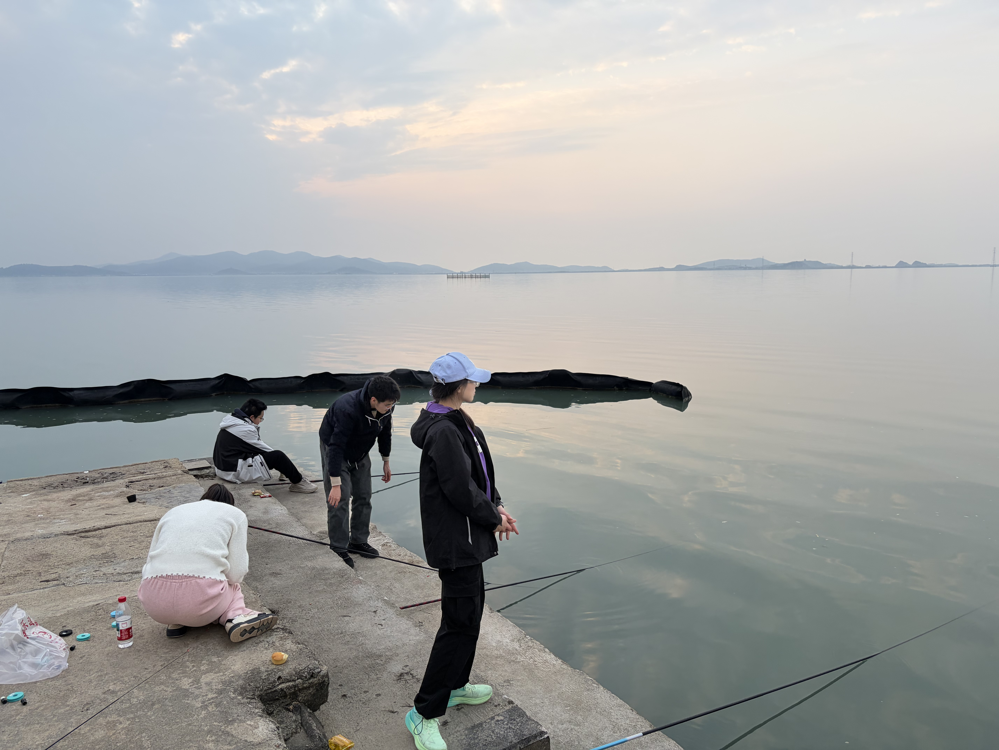
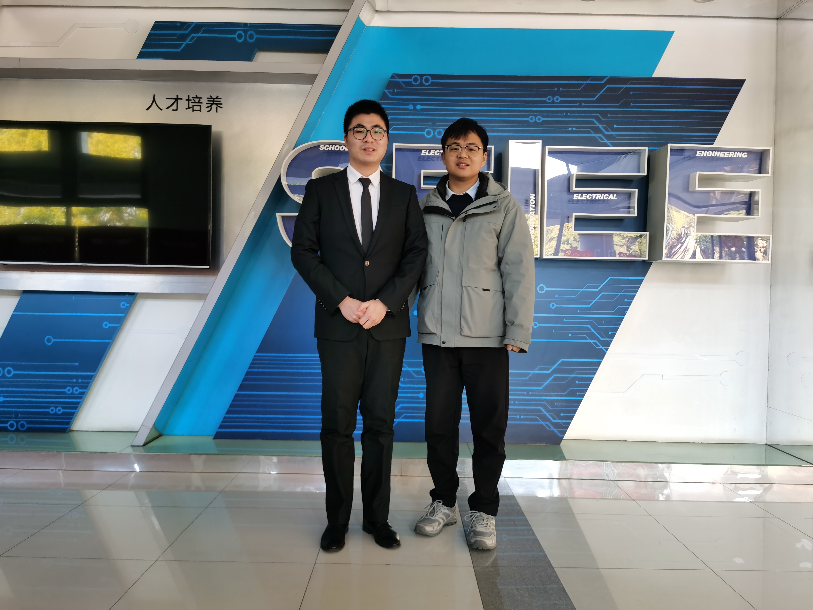
Shanghai Jiao Tong University — 2017–2023
University of Electronic Science and Technology of China — 2013–2017
- Mobile Computing and Intelligent Sensing — Graduate Course
- Computer Networks (Class D) — Undergraduate Course
- Member, IoT Special Committee — China Computer Federation (CCF)
- Expert Reviewer for Master's Degree Theses — Ministry of Education
- Session Chair — UbiComp/ISWC 2025 and IEEE/CIC ICCC
- Reviewer — ACM MobiCom, MobiSys, IEEE TPAMI, TNNLS
- Contributor to national standard: "IoT 470 MHz/2.4 GHz Sensor Network Communication and Information Exchange — Part 1: Physical Layer Requirements and Link Layer Protocol."